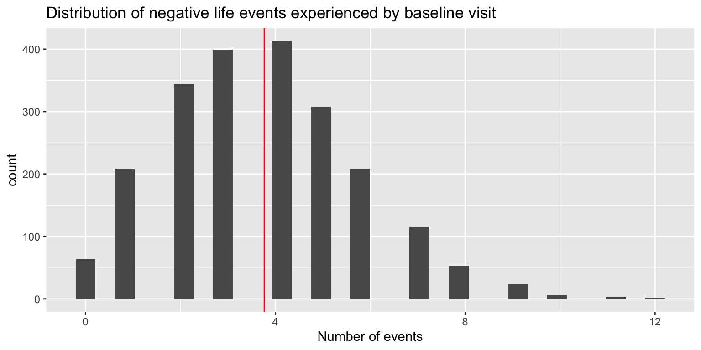
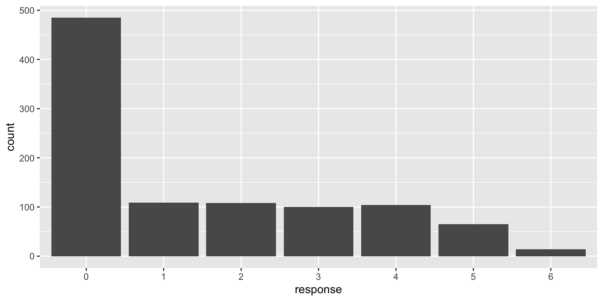

Predicting mental health and substance use in adulthood from resilience in adolescence
Bayes. Mediation. Lots of data.
In this project I do lots of Bayesian analysis and explore whether resilience in adolescence is predictive of various outcomes in adulthood.
Author
Philip Nguyen
Published
December 19, 2022
Project Summary
In this study I use data from the IMAGEN Study (initial n=2315) to determine if mental health and drug use in adulthood (~age 23) can be predicted by resilience in early adolescence (~age 14). Adolescents are classified into one of four groups following Burt et al’s operationalization of resilience as the interaction between competence and adversity. In addition, I look at whether structural brain differences at age 14 in brain regions identified by Burt mediate any of the differences observed in mental health outcomes and alcohol use at age 23.
To summarize, I find that there are significant differences in mental health outcomes and recent drug use at age 23 between the four groups. Additionally, the gray matter volume differences identified between the groups at age 14 did not mediate any of the differences in mental health or drug use. These results suggest that developmental features of early resilience such as social skills interact with adversity in a positive way and are predictive of numerous outcomes in adulthood. This corroborates with findings by (Roisman et al. 2004) that suggest the importance of developmentally salient tasks in predicting adult success.
Introduction
Resilience: The capacity of a dynamic system to withstand or recover from significant challenges that threaten its stability, viability, or development.
Resilience refers to the phenomenon of positive adaptation in the face of adverse life experiences (Masten 2011). Individuals who have had adverse life experiences are at higher risk of developing problems with mental health and drug use (Fritz et al. 2020). However the effects of adversity are varied. Some individuals have better outcomes than others despite experiencing similar levels of adversity. The study of resilience is thus concerned with understanding the factors and mechanisms that explain the variability of outcomes in people who have experienced significant adversity.
In this study I follow up on results produced by (Burt et al. 2016) using data from the IMAGEN Study. Burt et al. defined resilience in terms of the interaction between two binarized variables competence and adversity (details to follow further below). This yielded four groups into which participants were classified. Using this classification scheme, they discovered structural brain differences in four brain regions across the groups. One of these regions (right middle frontal gyrus) was found to be negatively correlated with a drinking composite score, suggesting that greater gray matter volume in this region may be protective of problematic alcohol use.
The IMAGEN Study has since collected follow-up data at three subsequent time points. These data include various measures of mental health and drug use, among others. Here I use the same classification schema as Burt et al to assess whether these groups defined at age 14 are predictive of mental health and drug use behavior 9 years later. Additionally, I test whether or not these potential differences in outcomes are mediated by the structural brain differences reported by Burt et al. My apriori guesses (hypotheses) are that differences in mental health will be better predicted than differences in drug use, and that the brain regions identified by Burt et al will play no role in mediating these differences.
Methods
(Load libraries, data, and define helper functions)
z_score <-function(x, miss_rmv = F){ (x -mean(x, na.rm = miss_rmv)) /sd(x, na.rm = miss_rmv)}pomp <-function(obs, min, max){ ((obs-min)/(max-min)) *100 }contrast_plot <-function(model,contrast_type ="", rope =NA, rope_pomp, pomp = F, pomp_min =NA, pomp_max =NA, scale ="",newdata ="mean",contrasts_df = F ){# compute class contrasts and gather draws contrasts_hdi <- model |>comparisons(variables =list(class ="pairwise"),# compute adjusted comparisons where covariates are held at their average value (cont)newdata = newdata) |>mutate(pomp_diff =pomp(comparison, pomp_min, pomp_max),pomp.low =pomp(conf.low, pomp_min, pomp_max),pomp.high =pomp(conf.high, pomp_min, pomp_max),across(where(is.numeric), ~round(.x, 2))) |>select(contrast, comparison, conf.low, conf.high, pomp_diff, pomp.low, pomp.high) |>arrange(desc(comparison)) contrast_draws <- model |>comparisons(variables =list(class ="pairwise"),newdata = newdata) |>posteriordraws() plot_raw <- contrast_draws |>ggplot(aes(x = draw, y =fct_reorder(contrast, draw, mean),fill =stat(abs(x) > rope))) +stat_halfeye() +labs(x ="Standardized mean difference", y ="", title =str_c("Difference of ", contrast_type, " in ", scale, " score")) +geom_vline(xintercept =c(-rope, rope), linetype ="dashed") +scale_fill_manual(values =c("gray80", "skyblue")) +theme(legend.position="none")if (pomp == T){ plot_pomp <- contrast_draws |>mutate(pomp =pomp(draw, pomp_min, pomp_max)) |>ggplot(aes(x = pomp, y =fct_reorder(contrast, pomp, mean),fill =stat(abs(x) > rope_pomp))) +stat_halfeye() +labs(x ="Percent of maximum possible (POMP)", y ="", title =str_c("Difference of POMP in ", scale, " score")) +geom_vline(xintercept =c(-rope_pomp, rope_pomp), linetype ="dashed") +scale_fill_manual(values =c("gray80", "skyblue")) +theme(legend.position="none") } else { plot_pomp =NULL }if (contrasts_df == T) {list(contrasts_df = contrast_draws,contrasts_hdi = contrasts_hdi,plot_raw = plot_raw,plot_pomp = plot_pomp ) } else {list(contrasts_df =NULL,contrasts_hdi = contrasts_hdi,plot_raw = plot_raw,plot_pomp = plot_pomp ) }}qi_table <-function(fit){ fit |>as_draws_df() |>select(contains("b_")) |>pivot_longer(cols=everything()) |>group_by(name) |> tidybayes::mean_qi() |>select(name, value, .lower, .upper) |>mutate(across(where(is.numeric), ~round(., 2))) |> rmarkdown::paged_table()}coef_plot <-function(fit, title){ fit |>as_draws_df() |>select(contains("b_")) |>pivot_longer(cols=everything()) |>ggplot(aes(y=name, x = value)) +stat_halfeye() +geom_vline(xintercept =0, linetype ="dashed") +labs(x ="Coefficient value", y ="", title = title)}
Participants
The IMAGEN dataset was obtained from eight sites in Europe: Berlin, Dresden, Dublin, Hamburg, London, Mannheim, Nottingham, and Paris. Adolescent participants completed a series of self-report and interview measures, in addition to structural MRI scans. Parent-reported data were also obtained for some measures. Data were collected at four time points: baseline, follow-up 1, follow-up 2, follow-up 3. Additional information on the sample and data acquisition can be found on the IMAGEN website and from Schumann et al.
Adversity is operationalized and drawn from the Life-Events Questionnaire, which uses 39 items to measure the lifetime occurrence of stressful life events across seven domains: family/parents, accident/illness, sexuality, autonomy, deviance, relocation, and distress. Additionally each item has a corresponding valence or perceived desirability of the event measured on a five-point Likert scale with responses: Very unhappy, Unhappy, Neutral, Happy, Very happy.

Competence
Competence is operationalized as the sum of standardized scores across four domains:
Rule-abiding conduct (40 items): 15 self- and parent-reported dichotomized DAWBA items assessing rule-breaking behavior in the past year as well as 5 self- and parent-reported SDQ items. (reverse-scored, once aggregated, such that higher scores represented greater rule-abiding conduct).
Social competence (41 items). 10 self- and 11 parent-reported DAWBA items representing prosocial behavior (each scored on a 0-2 scale) as well as 10 self- and 10 parent-reported SDQ items representing the Peer Problems (reversed) and Prosocial Behavior subscales.
Academic competence (4 items): 2 parent-reported DAWBA items (0-2 scale: “good at school work”; “general reasoning and school work”), 1 self-reported DAWBA item (0-2 scale: “good at school work”) and 1 ESPAD item (8-point scale representing ‘A’ to ‘C-’).
Emotional health (10 items): 5 self- and 5 parent-reported (all reversed) SDQ Emotional Symptoms items.
Standardized scores were calculated by aggregating items within each domain and computing a z-score. Scores beyond 3 standard deviations from the mean were truncated. Z-scores were then summed across domain, yielding a final competence score.
Group Classification
Following Burt et al, participants are classified into one of four groups based on where they fall along the competence and adversity measures.
First, competence was binarized based on whether participants had a z-score higher or lower than \(-0.5\) on all four competence domains. According to (Burt et al. 2016), this represents “a stringent definition of ‘doing well’ as it encompasses not only meeting external developmental task criteria (Roisman et al. 2004) but also non-elevated emotional symptoms.”
Second, adversity was also binarized based on a cutoff value of \(1\) standard deviation on number of negative lifetime events. This represents 6 or more events.
Crossing these binarized variables yielded four possible group classifications:
(C/a): High competence, low adversity (sometimes termed ‘competent’)
(C/A) High competence, high adversity (‘resilient’)
(c/A) Low competence, high adversity (‘maladaptive’)
Participants were required to have non-missing data for at least one competence indicator to receive a competence composite in some form, yielding \(n=2107\) classified subjects.
Table 1: Competence/Adversity Groupings
N = 2,3151
class
competent
740 (35%)
resilient
146 (6.9%)
vulnerable
964 (46%)
maladaptive
257 (12%)
Unknown
208
1 n (%)
Outcomes
While competence/adversity groupings were constructed at baseline (around age 14), the outcome measures of this study were obtained at the third follow-up point of the study (around age 23).
SDQ: Strength and Difficulties Questionnaire
Histogram of Standardized Total Difficulty Score.
The SDQ (Goodman, 1997) is a 25-item questionnaire completed by both adolescents and parents in the current study. It is divided into five subscales: emotional symptoms, conduct problems, hyperactivity/inattention, peer relationship problems, and prosocial behaviors. Each item is scored on a three-point scale (0 = not true, 1 = somewhat true, 2 = certainly true).
From the SDQ I use the Total Difficulty score as a measure of mental health. The total problem score is generated by summing the scores for all the scales except the prosocial scale. The resulting score ranges from \(0–40\). Each scale has five items, and there are four scales. The total score was not calculated if one of the component scores was missing.
Additionally, I decomposed the Total Difficulty Score into an Internalizing score and an Externalizing score to examine mental health problems in a more specific way. This aligns with how psychopathology is widely conceptualized such as in the ACEBA. Internalizing simply corresponds to the sum of items across the Emotional Symptoms scale and the Peer Relationship Problems scale in the SDQ. Externalizing corresponds to the sum of items across the Conduct Problems scale and the Hyperactivity/Inattention scale in the SDQ.
CESD: Center for Epidemiological Studies Depression Scale
Histogram of Standardized CESD Sum Score.
The CESD consists of twenty items that are rated on a four-poing likert scale (from 1: rarely or none of the time to 4: most or all of the time). Scores range from zero to sixty. Higher scores indicated a higher frequency of depressive symptoms during the last week.
Since some of the items from the SDQ are used in constructing competence, I use the sum score from the CESD as another measure of mental health to account for the expected differences in the Total Difficulty score.
PSS: Perceived Stress Scale
Histogram of Standardized PSS Sum Score.
The Perceived Stress Scale is a 10-item self report questionnaire that measures persons’ evaluation of the stressfulness of the situations in the past month of their lives. There is also a 4-item version. Scores can range from 0 to 40, with higher scores indicating greater stress.
AUDIT: Alcohol Use Disorder Identification Test
Histogram of Standardized AUDIT Sum Score.
The AUDIT has 10 questions and the possible responses to each question are scored 0, 1, 2, 3 or 4, with the exception of questions 9 and 10 which have possible responses of 0, 2 and 4.
The range of possible scores is from0 to 40 where 0 indicates an abstainer who has never had any problems from alcohol. A score of 1 to 7 suggests low-risk consumption according to World Health Organization (WHO) guidelines. Scores from 8 to 14 suggest hazardous or harmful alcohol consumption and a score of 15 or more indicates the likelihood of alcohol dependence (moderate-severe alcohol use disorder).
RAPI: Rutgers Alcohol Problem Index
Histogram of Standardized RAPI Sum Score.
The RAPI is a 23-item self-administered screening tool for assessing adolescent problem drinking. It was developed in order to create a conceptually sound, unidimensional, relatively brief, and easily administered instrument to assess problem drinking in adolescence. The advantages of this screening tool lie in its ease of administration and its standardization, which make it possible to compare problem drinking scores across groups.
ESPAD: European School Survey Project on Alcohol and Drugs
The ESPAD (Hibell et al., 1997) was administered using the computerized assessment platform Psytools (Delosis, London, UK). Psytools presented questionnaire items and response alternatives on a computer screen, with jump rules to skip inapplicable questions for the sake of brevity. As the Psytools program was run at the participant’s home without direct supervision by the research team, the reliability of individual data was checked in a two-stage procedure. Before every task, adolescents were asked to report on the current testing context including questions about their attentional focus and the confidentiality of the setting. Automated flags highlighted potentially problematic testing situations and were followed up by research assistants in confidential face-to-face sessions. Final reliability ratings were assigned which led to exclusion of the data in certain cases. Specifically, exclusion criteria for substance use measures included an indication that the participant was in a hurry, somebody was watching, or an indication of having known of or taken the sham drug Relevin.
To assess cigarette and marijuana/hash use, I gather two variables from the ESPAD that correspond to frequency of cigarette and marijuana/hash use within the past 30 days. Each item has seven response categories:

Histogram of responses to Cigarette Use in past 30 days
How frequently have you smoked cigarettes during the LAST 30 DAYS?
0 - “Not at all”
1 - “Less than one cigarette a week”
2 - “Less than one cigarette per day”
3 - “1-5 cigarettes per day”
4 - “6-10 cigarettes per day”
5 - “11-20 cigarettes per day”
6 - “More than 20 cigarettes per day”
Histogram of responses to Marjiana/Hash Use in past 30 days
On how many occasions OVER THE LAST 30 DAYS have you used marijuana (grass, pot) or hashish (hash, hash oil)?
0 - “0”
1 - “1-2”
2 - “3-5”
3 - “6-9”
4 - “10-19”
5 - “20-39”
6 - “40 or more”
Analysis
All analyses were conducted in R (version 4.2.1) and primarily employ a Bayesian framework. The benefits of using a Bayesian approach have been highlighted extensively elsewhere (Dienes 2011; Kruschke 2013; van de Schoot et al. 2014). Prior to model fitting, continuous covariates were mean-centered, continuous* outcomes were standardized, and categorical variables were left as is. Missing values were dropped during model fitting (case-dropping).
*Sum scores are technically not continuous, but are often treated as such. I will follow suit for ease and simplicity.
Predicting Future MH and Drug Use
For predicting mental health and drug use in adulthood, I use seven outcomes:
Total Difficulties Score (TDS): a general measure of mental health
CESD Sum Score (CESD): a measure of depression symptoms in the past week
Perceived Stress Sum Score (PSS): a measure of general stress
AUDIT Total Score (AUD): a composite score for problematic drinking
RAPI Sum Score (RAP): a measure of problemtic drinking
(MJH) Frequency of marijuana/hash use in the past 30 days
(CIG) Frequency of cigarette use in the past 30 days
Each outcome is regressed onto class (the competence/adversity groupings), in addition to a set of covariates to statistically control for possible confounding effects. The set of covariates correspond to measurements at baseline. The included covariates are:
sex
study site
puberty score
verbal IQ
performance IQ
age
handedness
To account for the effect of outliers without excluding them entirely, I use a Student-t distribution as the likelihood (see Robust linear regression) for modeling first five outcomes: TDS, CESD, PSS, AUD, and RAP. As noted by (McElreath 2020), the model will still produce similar coefficient estimates to a regression model using a Gaussian likelihood, but is more robust to the presence of outliers. For MJH and CIG, I use the ordered probit to properly model each item as Likert-scale responses.
Priors for each model are weakly informative, thus allowing the data “to speak†and inform coefficient estimates. In general, for the first five outcomes, the mathematical description looks like
\[
\begin{gather}
\text{outcome}_i \sim \text{Student-t}(\nu, \mu_i, \sigma^{2}) \\
\mu_i = \beta_{0} + \sum_{j=1}^{p}\beta_{j}X_{j} \\
\beta_{0}, \beta_{j} \sim \text{Normal}(0,10) \\
\sigma \sim \text{Exponential}(0.5)\\
\nu \sim \text{gamma}(2, 0.1) \\
\end{gather}
\]where \(i\) indexes each participant. This also allows for Bayesian hypothesis testing, which will be detailed in each analysis section.
For the ordered probit models, the mathematical description is slightly different. We instead have
\[
\begin{gather}
p(\text{response} = k \mid \{\tau_k\}, \mu_i) = \Phi(\tau_{k} - \mu_i) - \Phi(\tau_{k-1} - \mu_i) \\
\mu_i = \sum_{j=1}^{p}\beta_{j}X_{j} \\
\tau_{0-6} \sim \text{Normal}(0, 3)\\
\beta_{j} \sim \text{Normal}(0,10)
\end{gather}
\]where we have \(k+1\) possible responses to an item (e.g. \(k=6\) “How frequently have you smoked cigarettes during the last 30 days?”). \(\Phi\) denotes the cumulative distribution function for a standard normal distribution (mean: \(0\), sd: \(1\)), and \(\tau_{0-6}\) represents the threshold values that divide the standard normal distribution into regions that correspond to the probability of each response\(k\). More on the ordered probit model is discussed in (Bürkner and Vuorre 2019) and (McElreath 2020).
For each sum score outcome, I will 1) fit the model 2) display a table containing the 95% CI and posterior point estimate for each coefficient 3) plot the posterior distribution of coefficient estimates, and 4) plot a contrast plot between each competence/adversity group, which represents the standardized difference in means between each group. For the ordinal variables (frequency of cigarette and mj/hash use) I include 1-3 but no contrast plot.
Posterior distribution of coefficients with 95% CIs.
4) Contrast plot
On the latent distribution scale
In terms of predicted responses
For the predicted responses, we generate a number of responses for individuals within each resilience group, repeated several thousand times, i.e. for each draw from the MCMC chain, we will generate a number of predicted responses for each group. What we could look at to determine if groups are different is the contrast in the expected value of responses.
Posterior distribution of coefficients with 95% CIs.
4) Contrast plot
On the latent distribution scale
In terms of predicted responses
For the predicted responses, we generate a number of responses for individuals within each resilience group, repeated several thousand times, i.e. for each draw from the MCMC chain, we will generate a number of predicted responses for each group. What we could look at to determine if groups are different is the contrast in the expected value of responses.
Mediation
For each of the sum score outcomes above, I run a mediation analysis using as mediators the structural brain differences Burt et al identified. In other words, I want to know if these brain differences mediate any of the effects of the competence/adversity groupings on mental health or drug use.
Once the models are fit, I compute posterior distributions over the direct and indirect effects. Given these distributions, I then conduct a Bayesian hypothesis test (Wagenmakers et al. 2010) to examine if there are substantial mediation effects in any of the regions. In short the test computes a ratio of the posterior density and prior density at a specified value of the effect of interest. Below I specify the value at \(0\) as an analogue to null hypothesis significance testing. An additional benefit of this test is that it also gives evidence for the null rather than only evidence against it.
Table of Bayesian hypothesis test results. (Evidence ratio > 1 supports “null†hypothesis. Evidence ratio < 1 supports “alternative†hypothesis.) Each row represents a different indirect effect for each unique pair of class and brain region.
Plotted below are the posteriors of the indirect effect.
Code
med_tds |>as_draws_df() |>select(.draw,contains("_class"),contains("b_dawbasdqcsebdtotfu3_c")) |>pivot_longer(cols =matches("(b_cl.*)_(class.*)"),names_to =c("mediator_a", "class"),names_pattern ="(b_cl.*)_(class.*)",values_to ="a") |>pivot_longer(cols =matches("(b_dawbasdqcsebdtotfu3)_(cl..)_(.*)"),names_to =c("outcome", "mediator_b"),names_pattern ="(b_dawbasdqcsebdtotfu3)_(cl.*)",values_to ="b") |># compute ab for every class, for every brain mediatormutate(ab = a * b,mediator_a =str_remove(mediator_a, "b_"),mediator_b =str_remove_all(mediator_a, "_"),mediator = mediator_a == mediator_b) |>#group_by(mediator_a) |>#mean_qi(ab) |># mutate(across(where(is.numeric), ~round(.x, 3)))ggplot(aes(x = ab, y = mediator_a)) +stat_halfeye() +xlim(-0.3, 0.3) +labs(y ="", x ="a * b")
Table of Bayesian hypothesis test results. (Evidence ratio > 1 supports “null†hypothesis. Evidence ratio < 1 supports “alternative†hypothesis.) Each row represents a different indirect effect for each unique pair of class and brain region.
Plotted below are the posteriors of the indirect effect.
Code
med_cesd |>as_draws_df() |>select(.draw,contains("_class"),contains("b_cesdcsumfu3_c")) |>pivot_longer(cols =matches("(b_cl.*)_(class.*)"),names_to =c("mediator_a", "class"),names_pattern ="(b_cl.*)_(class.*)",values_to ="a") |>pivot_longer(cols =matches("(b_cesdcsumfu3)_(cl..)_(.*)"),names_to =c("outcome", "mediator_b"),names_pattern ="(b_cesdcsumfu3)_(cl.*)",values_to ="b") |># compute ab for every class, for every brain mediatormutate(ab = a * b,mediator_a =str_remove(mediator_a, "b_"),mediator_b =str_remove_all(mediator_a, "_"),mediator = mediator_a == mediator_b) |>#group_by(mediator_a) |>#mean_qi(ab) |># mutate(across(where(is.numeric), ~round(.x, 3)))ggplot(aes(x = ab, y = mediator_a)) +stat_halfeye() +xlim(-0.3, 0.3) +labs(y ="", x ="a * b")
Table of Bayesian hypothesis test results. (Evidence ratio > 1 supports “null†hypothesis. Evidence ratio < 1 supports “alternative†hypothesis.) Each row represents a different indirect effect for each unique pair of class and brain region.
Plotted below are the posteriors of the indirect effect.
Code
med_aud |>as_draws_df() |>select(.draw,contains("_class"),contains("b_audittotalscorefu3_c")) |>pivot_longer(cols =matches("(b_cl.*)_(class.*)"),names_to =c("mediator_a", "class"),names_pattern ="(b_cl.*)_(class.*)",values_to ="a") |>pivot_longer(cols =matches("(b_audittotalscorefu3)_(cl..)_(.*)"),names_to =c("outcome", "mediator_b"),names_pattern ="(b_audittotalscorefu3)_(cl.*)",values_to ="b") |># compute ab for every class, for every brain mediatormutate(ab = a * b,mediator_a =str_remove(mediator_a, "b_"),mediator_b =str_remove_all(mediator_a, "_"),mediator = mediator_a == mediator_b) |>#group_by(mediator_a) |>#mean_qi(ab) |># mutate(across(where(is.numeric), ~round(.x, 3)))ggplot(aes(x = ab, y = mediator_a)) +stat_halfeye() +xlim(-0.3, 0.3) +labs(y ="", x ="a * b")
Table of Bayesian hypothesis test results. (Evidence ratio > 1 supports “null†hypothesis. Evidence ratio < 1 supports “alternative†hypothesis.) Each row represents a different indirect effect for each unique pair of class and brain region.
Plotted below are the posteriors of the indirect effect.
Code
med_rap |>as_draws_df() |>select(.draw,contains("_class"),contains("b_rapicsumfu3_c")) |>pivot_longer(cols =matches("(b_cl.*)_(class.*)"),names_to =c("mediator_a", "class"),names_pattern ="(b_cl.*)_(class.*)",values_to ="a") |>pivot_longer(cols =matches("(b_rapicsumfu3)_(cl..)_(.*)"),names_to =c("outcome", "mediator_b"),names_pattern ="(b_rapicsumfu3)_(cl.*)",values_to ="b") |># compute ab for every class, for every brain mediatormutate(ab = a * b,mediator_a =str_remove(mediator_a, "b_"),mediator_b =str_remove_all(mediator_a, "_"),mediator = mediator_a == mediator_b) |>#group_by(mediator_a) |>#mean_qi(ab) |># mutate(across(where(is.numeric), ~round(.x, 3)))ggplot(aes(x = ab, y = mediator_a)) +stat_halfeye() +xlim(-0.3, 0.3) +labs(y ="", x ="a * b")
Table of Bayesian hypothesis test results. (Evidence ratio > 1 supports “null†hypothesis. Evidence ratio < 1 supports “alternative†hypothesis.) Each row represents a different indirect effect for each unique pair of class and brain region.
Plotted below are the posteriors of the indirect effect.
Code
med_pss |>as_draws_df() |>select(.draw,contains("_class"),contains("b_psscsumfu3_c")) |>pivot_longer(cols =matches("(b_cl.*)_(class.*)"),names_to =c("mediator_a", "class"),names_pattern ="(b_cl.*)_(class.*)",values_to ="a") |>pivot_longer(cols =matches("(b_psscsumfu3)_(cl..)_(.*)"),names_to =c("outcome", "mediator_b"),names_pattern ="(b_psscsumfu3)_(cl.*)",values_to ="b") |># compute ab for every class, for every brain mediatormutate(ab = a * b,mediator_a =str_remove(mediator_a, "b_"),mediator_b =str_remove_all(mediator_a, "_"),mediator = mediator_a == mediator_b) |>#group_by(mediator_a) |>#mean_qi(ab) |># mutate(across(where(is.numeric), ~round(.x, 3)))ggplot(aes(x = ab, y = mediator_a)) +stat_halfeye() +xlim(-0.3, 0.3) +labs(y ="", x ="a * b")
Conclusion
The results of this project suggest that early competence, as measured in adolescence, interacts with lifetime adversity in such a way as to be predictive of future mental health outcomes. This is aligned with conclusions by (Roisman et al. 2004), where they find that salient developmental tasks are predictive of future success within and across domains of competence, broadly defined. The findings in this study also corroborate with (Fritz et al. 2018) in that sub-domains of competence as defined here may serve to buffer the effects of adversity on mental health.
Regarding drug use, the results are null regarding the question at hand. What we want to know is if competence offsets the effects of adversity. Hence, the contrasts we care about are maladaptive-competent, and maladaptive-resilient since it’s expected that the competent and resilient groups have similar outcomes due to the effect of high competence, while the maladaptive group is high in adversity but low in competence.
We don’t see that effect with these contrasts on the AUDIT or RAPI scale since a significant portion of their posterior distributions overlap an effect of \(0\). Additionally, the differences are small in comparison to the magnitude of the differences on the mental health measures, the posteriors of which are more definitively well outside of a null effect.
The results for cigarette use and marijuana/hash use are more difficult to interpret since I have used the ordered probit model. For cigarette use, the contrast plot of coefficients suggest that the maladaptive and competent group differ in mean response on the latent distribution scale. We see that they also differ in expected value on the scale of the response. So it seems that competence does interact with adversity in a way as to suggest that the maladaptive group is more likely to smoke cigarettes than the competent group, on average. Additionally, a similar conclusion can be drawn for the vulnerable group relative to the competent group. However, it doesn’t seem that competence operates as a buffer to adversity since we care about the contrast between the maladaptive and competent group, and maladaptive and resilient group. A similar conclusion is drawn regarding marijuana/hash use.
With regard to the mediation analysis, none of the structural brain differences identified between the groups at age 14 mediated the effect of the competence/adversity groupings on future mental health or drug use. This is made clear by the fact that the posterior distributions of the indirect effects for every outcome are narrowly centered at zero. That is, the model is quite confident in saying that we have null effects.
Appendix
Tables
Descriptive
Table 2: Descriptive statistics of variables used in analyses
Characteristic
Overall, N = 2,1071
competent, N = 7401
resilient, N = 1461
vulnerable, N = 9641
maladaptive, N = 2571
Sex
Female
1,075 (51%)
376 (51%)
91 (62%)
452 (47%)
156 (61%)
Male
1,032 (49%)
364 (49%)
55 (38%)
512 (53%)
101 (39%)
Handedness
Left
196 (11%)
67 (10%)
15 (11%)
87 (11%)
27 (12%)
Right
1,625 (89%)
579 (90%)
117 (89%)
723 (89%)
206 (88%)
Puberty score
10.00 (8.00, 11.00)
10.00 (7.00, 11.00)
10.00 (8.00, 11.00)
9.00 (7.00, 10.00)
10.00 (8.00, 11.00)
Site
1
344 (16%)
121 (16%)
32 (22%)
145 (15%)
46 (18%)
2
255 (12%)
86 (12%)
22 (15%)
114 (12%)
33 (13%)
3
259 (12%)
89 (12%)
3 (2.1%)
149 (15%)
18 (7.0%)
4
257 (12%)
87 (12%)
13 (8.9%)
114 (12%)
43 (17%)
5
260 (12%)
96 (13%)
22 (15%)
106 (11%)
36 (14%)
6
253 (12%)
94 (13%)
25 (17%)
104 (11%)
30 (12%)
7
257 (12%)
93 (13%)
19 (13%)
115 (12%)
30 (12%)
8
222 (11%)
74 (10%)
10 (6.8%)
117 (12%)
21 (8.2%)
Age (years)
14.42 (14.14, 14.74)
14.39 (14.12, 14.69)
14.48 (14.18, 14.79)
14.43 (14.14, 14.74)
14.47 (14.16, 14.81)
Performance IQ
78 (70, 85)
81 (72, 87)
79 (71, 85)
77 (68, 84)
77 (66, 84)
Verbal IQ
81 (72, 89)
83 (75, 90)
82 (75, 90)
79 (69, 88)
80 (71, 89)
1 n (%); Median (IQR)
Regressions
Robust regression output for TDS, Internalizing, Externalizing
Variable
TDS
Internalizing
Externalizing
Beta
95% CI1
Beta
95% CI1
Beta
95% CI1
class
competent
—
—
—
—
—
—
resilient
0.07
-0.16, 0.29
0.10
-0.12, 0.32
0.01
-0.22, 0.24
vulnerable
0.40
0.28, 0.53
0.40
0.28, 0.52
0.26
0.13, 0.39
maladaptive
0.76
0.57, 0.96
0.71
0.52, 0.90
0.57
0.38, 0.77
sex
sexMale
-0.20
-0.35, -0.06
-0.44
-0.58, -0.30
0.14
-0.01, 0.29
pds_sum_c
0.00
-0.04, 0.04
0.00
-0.03, 0.04
0.00
-0.04, 0.03
v_iq_c
0.00
-0.01, 0.00
0.00
0.00, 0.01
-0.01
-0.01, 0.00
p_iq_c
0.00
-0.01, 0.00
0.00
-0.01, 0.00
0.00
-0.01, 0.00
age_years_bsl_c
0.03
-0.12, 0.18
0.02
-0.13, 0.17
0.03
-0.13, 0.19
recruitment_centre
1
—
—
—
—
—
—
2
-0.20
-0.42, 0.03
-0.06
-0.28, 0.16
-0.27
-0.50, -0.04
3
-0.07
-0.30, 0.16
-0.13
-0.35, 0.10
0.01
-0.23, 0.24
4
-0.23
-0.46, 0.00
-0.26
-0.48, -0.03
-0.10
-0.34, 0.14
5
-0.27
-0.50, -0.05
-0.21
-0.44, 0.01
-0.24
-0.47, -0.01
6
-0.09
-0.32, 0.12
-0.10
-0.32, 0.12
-0.06
-0.29, 0.17
7
-0.21
-0.44, 0.01
-0.17
-0.39, 0.06
-0.19
-0.43, 0.05
8
0.04
-0.22, 0.31
-0.04
-0.30, 0.21
0.13
-0.13, 0.38
all_handedness
all_handednessRight
0.10
-0.08, 0.28
0.10
-0.07, 0.27
0.05
-0.14, 0.24
1 CI = Credible Interval
Robust regression output for CESD and PSS scores
Variable
CESD score
PSS score
Beta
95% CI1
Beta
95% CI1
class
competent
—
—
—
—
resilient
0.03
-0.14, 0.22
0.02
-0.20, 0.25
vulnerable
0.18
0.07, 0.29
0.24
0.12, 0.37
maladaptive
0.48
0.30, 0.66
0.54
0.34, 0.73
sex
sexMale
-0.15
-0.27, -0.03
-0.25
-0.40, -0.10
pds_sum_c
-0.01
-0.04, 0.02
-0.01
-0.05, 0.03
v_iq_c
0.00
-0.01, 0.00
0.00
-0.01, 0.00
p_iq_c
-0.01
-0.01, 0.00
-0.01
-0.01, 0.00
age_years_bsl_c
0.07
-0.06, 0.20
0.13
-0.03, 0.27
recruitment_centre
1
—
—
—
—
2
-0.20
-0.40, 0.00
-0.39
-0.62, -0.15
3
-0.15
-0.36, 0.06
-0.36
-0.59, -0.13
4
-0.03
-0.23, 0.17
-0.22
-0.46, 0.02
5
-0.02
-0.22, 0.17
-0.21
-0.43, 0.02
6
-0.06
-0.26, 0.14
-0.17
-0.40, 0.06
7
-0.12
-0.32, 0.09
-0.13
-0.37, 0.11
8
-0.14
-0.37, 0.08
-0.15
-0.40, 0.11
all_handedness
all_handednessRight
0.00
-0.15, 0.16
0.02
-0.17, 0.19
1 CI = Credible Interval
Robust regression output for AUDIT and RAPI scores
Variable
AUDIT score
RAPI score
Beta
95% CI1
Beta
95% CI1
class
competent
—
—
—
—
resilient
0.05
-0.14, 0.24
0.05
-0.04, 0.14
vulnerable
-0.03
-0.14, 0.07
0.01
-0.04, 0.06
maladaptive
0.13
-0.04, 0.29
0.03
-0.05, 0.12
sex
sexMale
0.31
0.19, 0.44
0.05
-0.01, 0.11
pds_sum_c
-0.01
-0.04, 0.02
-0.01
-0.02, 0.01
v_iq_c
0.00
0.00, 0.01
0.00
0.00, 0.00
p_iq_c
0.00
0.00, 0.01
0.00
0.00, 0.00
age_years_bsl_c
-0.06
-0.19, 0.06
0.01
-0.05, 0.07
recruitment_centre
1
—
—
—
—
2
-0.45
-0.63, -0.27
-0.09
-0.17, -0.01
3
-0.33
-0.52, -0.15
-0.06
-0.14, 0.03
4
-0.36
-0.55, -0.16
-0.06
-0.15, 0.02
5
-0.40
-0.58, -0.21
-0.03
-0.12, 0.05
6
0.01
-0.18, 0.20
0.07
-0.02, 0.17
7
-0.31
-0.50, -0.12
0.07
-0.03, 0.16
8
0.27
0.05, 0.49
0.23
0.09, 0.37
all_handedness
all_handednessRight
0.04
-0.11, 0.19
0.01
-0.06, 0.08
1 CI = Credible Interval
Ordered probit regression output for frequency of cigarette and marijuana/hash use
Variable
Cigarette Use
Marijuana/Hash Use
Beta
95% CI1
Beta
95% CI1
(Intercept)[1]
0.15
-0.18, 0.47
-0.78
-1.3, -0.32
(Intercept)[2]
0.43
0.11, 0.75
-0.11
-0.58, 0.35
(Intercept)[3]
0.76
0.44, 1.1
0.16
-0.31, 0.63
(Intercept)[4]
1.1
0.79, 1.5
0.49
0.01, 0.95
(Intercept)[5]
1.7
1.4, 2.0
0.79
0.32, 1.3
(Intercept)[6]
2.6
2.2, 3.0
1.1
0.67, 1.6
classresilient
0.21
-0.09, 0.50
0.11
-0.31, 0.55
classvulnerable
0.23
0.05, 0.40
0.27
0.00, 0.53
classmaladaptive
0.32
0.07, 0.57
0.30
-0.05, 0.65
pds_sum_c
-0.06
-0.10, -0.02
-0.06
-0.12, 0.00
v_iq_c
0.00
-0.01, 0.00
0.00
-0.01, 0.01
p_iq_c
-0.01
-0.01, 0.00
0.00
-0.01, 0.01
age_years_bsl_c
0.08
-0.13, 0.28
0.11
-0.20, 0.43
recruitment_centre2
0.21
-0.10, 0.51
-0.25
-0.70, 0.22
recruitment_centre3
-0.04
-0.35, 0.26
-0.09
-0.53, 0.36
recruitment_centre4
0.46
0.16, 0.75
0.06
-0.37, 0.48
recruitment_centre5
-0.11
-0.41, 0.19
-0.22
-0.67, 0.21
recruitment_centre6
-0.11
-0.41, 0.19
-0.19
-0.63, 0.26
recruitment_centre7
0.03
-0.27, 0.33
0.07
-0.40, 0.55
recruitment_centre8
-0.09
-0.42, 0.24
-0.60
-1.1, -0.14
all_handednessRight
0.01
-0.23, 0.26
-0.16
-0.52, 0.19
1 CI = Credible Interval
References
Bürkner, Paul-Christian, and Matti Vuorre. 2019. “Ordinal Regression Models in Psychology: A Tutorial.”Advances in Methods and Practices in Psychological Science 2 (1): 77–101. https://doi.org/10.1177/2515245918823199.
Burt, Keith B., Robert Whelan, Patricia J. Conrod, Tobias Banaschewski, Gareth J. Barker, Arun L. W. Bokde, Uli Bromberg, et al. 2016. “Structural Brain Correlates of Adolescent Resilience.”J Child Psychol Psychiatr 57 (11): 1287–96. https://doi.org/10.1111/jcpp.12552.
Dienes, Zoltan. 2011. “Bayesian Versus Orthodox Statistics: Which Side Are You On?”Perspect Psychol Sci 6 (3): 274–90. https://doi.org/10.1177/1745691611406920.
Fritz, Jessica, Anne M. de Graaff, Helen Caisley, Anne-Laura van Harmelen, and Paul O. Wilkinson. 2018. “A Systematic Review of Amenable Resilience Factors That Moderate and/or Mediate the Relationship Between Childhood Adversity and Mental Health in Young People.”Frontiers in Psychiatry 9. https://www.frontiersin.org/articles/10.3389/fpsyt.2018.00230.
Fritz, Jessica, Jan Stochl, Ian M. Goodyer, Anne-Laura Van Harmelen, and Paul Wilkinson. 2020. “An Empirical Examination of How Resilience Factors Mitigate the Effect of Childhood Adversity on Adolescent Mental Health.”OSF Preprints. https://doi.org/10.31219/osf.io/6z5h9.
Hayes, Andrew F., and Kristopher J. Preacher. 2014. “Statistical Mediation Analysis with a Multicategorical Independent Variable.”Br J Math Stat Psychol 67 (3): 451–70. https://doi.org/10.1111/bmsp.12028.
Kruschke, John K. 2013. “Bayesian Estimation Supersedes the t Test.”Journal of Experimental Psychology: General 142 (2): 573–603. https://doi.org/10.1037/a0029146.
Masten, Ann S. 2011. “Resilience in Children Threatened by Extreme Adversity: Frameworks for Research, Practice, and Translational Synergy.”Dev Psychopathol 23 (2): 493–506. https://doi.org/10.1017/S0954579411000198.
McElreath, Richard. 2020. Statistical Rethinking: A Bayesian Course with Examples in R and Stan. 2nd ed. CRC Texts in Statistical Science. Boca Raton: Taylor; Francis, CRC Press.
Roisman, Glenn I., Ann S. Masten, J. Douglas Coatsworth, and Auke Tellegen. 2004. “Salient and Emerging Developmental Tasks in the Transition to Adulthood.”Child Development 75 (1): 123–33. https://doi.org/10.1111/j.1467-8624.2004.00658.x.
van de Schoot, Rens, David Kaplan, Jaap Denissen, Jens B. Asendorpf, Franz J. Neyer, and Marcel A. G. van Aken. 2014. “A Gentle Introduction to Bayesian Analysis: Applications to Developmental Research.”Child Dev 85 (3): 842–60. https://doi.org/10.1111/cdev.12169.
Wagenmakers, Eric-Jan, Tom Lodewyckx, Himanshu Kuriyal, and Raoul Grasman. 2010. “Bayesian Hypothesis Testing for Psychologists: A Tutorial on the Savage Method.”Cognitive Psychology 60 (3): 158–89. https://doi.org/10.1016/j.cogpsych.2009.12.001.